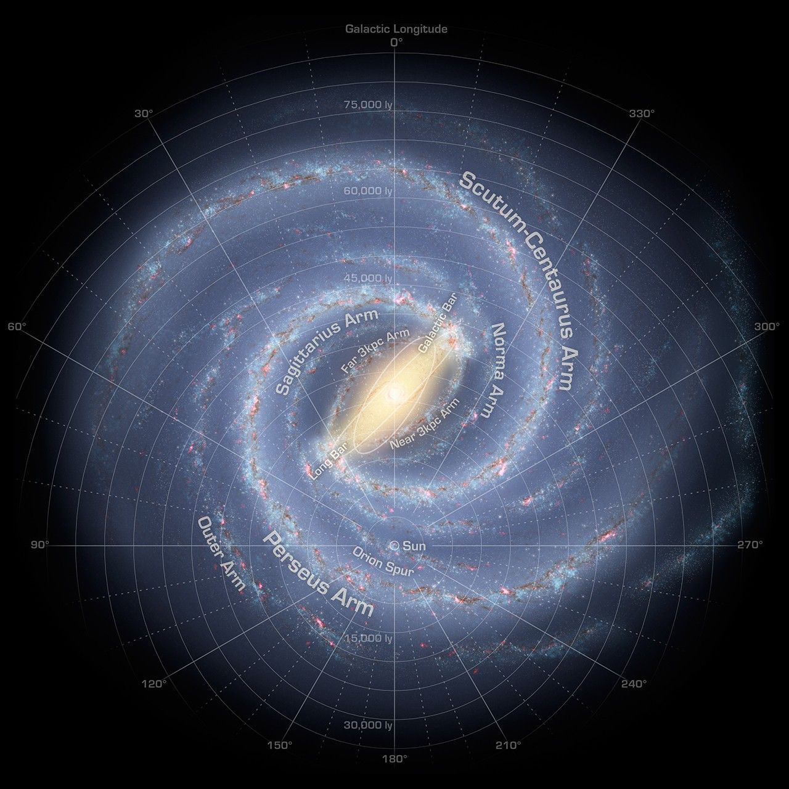

Moon:
•The moon is Earth's natural satellite, the largest in our solar system relative to its primary planet. It's a rocky, dusty body that orbits Earth at an average distance of 384,399 kilometers.
Key Facts about the Moon:
•Natural Satellite: The Moon is Earth's only natural satellite, meaning it's a celestial body that orbits Earth naturally.
•Size and Distance: It's about one-fourth the width of Earth and is located at an average distance of 384,399 kilometers from Earth.
•Gravity: The gravity on the Moon is about one-sixth of Earth's gravity.
•Tidal Influence: The Moon's gravitational pull is the primary cause of tides on Earth.
•Surface: The Moon's surface is mostly rocky and dusty, with numerous craters, rilles (channels or troughs), and maria (large, dark areas that are actually volcanic plains).
Milky Way galaxy:
The Milky Way is the galaxy that contains our solar system and is a large barred spiral galaxy. It appears as a faint, milky band of light across the night sky, which is made up of billions of stars, dust, and gas. Our Sun is located in one of the Milky Way's spiral arms, about 25,000 light-years away from the galaxy's center.

Structure:
•The Milky Way is a barred spiral galaxy, meaning it has a central bar of stars and a disk with spiral arms extending outwards.
Size:
•It's estimated to be about 100,000 light-years across and about 1000 light-years thick.